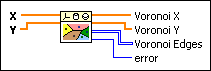
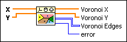

Voronoi Diagram VI
Owning Palette: Computational Geometry VIs
Requires: Full Development System
Computes the Voronoi diagram of specified points in a plane.

 Add to the block diagram Add to the block diagram |
 Find on the palette Find on the palette |
Owning Palette: Computational Geometry VIs
Requires: Full Development System
Computes the Voronoi diagram of specified points in a plane.

| Add to the block diagram |
Find on the palette |
 |
X specifies the x-coordinates of the points in the plane. The length of X must be greater than or equal to 3. |
|
Y specifies the y-coordinates of the points in the plane. The length of Y must equal the length of X. |
 |
Voronoi X returns the x-coordinates of Voronoi points. |
|
Voronoi Y returns the y-coordinates of Voronoi points. |
 |
Voronoi Edges returns an n-by-2 array. n represents the number of edges in the Voronoi diagram. Each row of Voronoi Edges represents an edge of the Voronoi diagram that uses the indexes of Voronoi points. |
 |
error returns any error or warning from the VI. You can wire error to the Error Cluster From Error Code VI to convert the error code or warning into an error cluster. |
For n given points in the plane, the Voronoi diagram divides the plane into n Voronoi cells. Each given point belongs to one Voronoi cell. The point in a Voronoi cell is closer to the corresponding given point than to any of the other given points. The following illustration shows an example of a Voronoi diagram of 8 given points.
Refer to the Voronoi and Delaunay Plot VI in the labview\examples\Mathematics\Geometry directory for an example of using the Voronoi Diagram VI.
 Open example Find related examples
Open example Find related examples